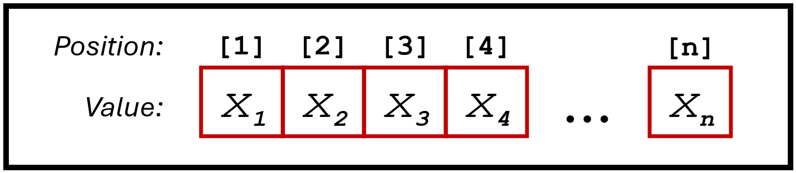

Teachers = c("Pastore", "Kiesner", "Granziol", "Toffalini", "Calignano",
"Epifania", "Bastianelli")
Hours = c(10, 15, 20, 10, 15, 5, 15, 5)Basics of Programming: Conditional Statements and Iterations
Enrico Toffalini
What are data structures
Data structures, like vectors, matrices, dataframes, lists, are fundamental tools that allow you to organize and store complex information, so that they can be easily processes by functions (e.g., lm() function to fit a linear model using variables stored in a dataframe)
Most operations you will perform in R (e.g., processing data, fitting models, plotting outputs) are performed on these data structures
Vectors
Simple one-dimensional structures that store data of different types

Here is an actual example (of a numerical vector):
Vectors
Vectors can easily be created using the c() base function:
But be careful NOT to mix different types of data:
[1] "10" "15" "20" "10" "15" "tbd" "15" "5" instead, if needed, use NA (Not Available):
Vectors
Select/extract elements with INDEXING using square brackets []:
[1] 10[1] 15 5 15[1] 10 20 5Know the length of a vector using the length() function, and use it:
Vectors
Negative indexing
You can use the minus sign - to select all elements except some from a vector. (This method is also applicable to dataframes)
Vectors
Logical indexing
Often, you’ll need to extract values from a vector based on specific logical conditions. Here’s an example:
Hours = c(10, 15, 20, 10, 15, 5, 15, 5)
Hours[Hours >= 15] # extract only values greater than or equal to 15[1] 15 20 15 15This is called logical indexing because you are selecting elements based on a logical vector (i.e., a sequence of TRUE, FALSE):
[1] FALSE TRUE TRUE FALSE TRUE FALSE TRUE FALSEAlso, you can use a vector to extract values from another vector:
Vectors
Operations
you can simultaneously apply an operation to a whole vector, like
Of course, this is useful when you want to save the result as a new vector:
Similarly, you can apply functions to all elements of a vector:
Vectors
Summary statistics
A whole vector may serve to compute summary statistics, for example using functions such as mean(), sd(), median(), quantile(), max(), min():
[1] 11.875[1] 5.303301[1] 12.5 25% 75%
8.75 15.00 [1] 20[1] 5Vectors
Summary statistics - Managing missing (NA) values
All of the previous summary statistics will fail if there is even a single NA value:
Hours = c(10, 15, 20, 10, 15, NA, 15, 5)
mean(Hours) # a single NA value implies that the average is impossible to determine[1] NAError in quantile.default(Hours, probs = c(0.25, 0.75)): missing values and NaN's not allowed if 'na.rm' is FALSEYou can easily manage missing values by adding the na.rm=TRUE argument:
Vectors
Example: replacing NA with the average value
Replacing a missing value with the average across valid values is risky, as it may alter many other summary statistics, but it is a good example for understanding different concepts seen so far:
Hours = c(10, 15, 20, 10, 15, NA, 15, 5)
# compute the average value ignoring NAs, and put it wherever
# there is a NA value in the vector
Hours[is.na(Hours)] = mean(Hours, na.rm=TRUE)
# now let's inspect the updated content of the vector
Hours[1] 10.00000 15.00000 20.00000 10.00000 15.00000 12.85714 15.00000 5.00000[1] 12.85714A type of data structure you are already familiar with
Dataframes
here is how I would import it in R (download here), and display the first few rows:
Year TypeOfCourse Title
1 1 METHODOLOGY CURRENT ISSUES IN STATISTICAL INFERENCE FOR PSYCHOLOGY
2 1 METHODOLOGY LINEAR AND MIXED EFFECT MODELS WITH SPSS
3 1 METHODOLOGY BASICS OF STATISTICAL INFERENCE WITH R
4 1 PROGRAMMING BASICS OF R FOR DATA SCIENCE
5 1 METHODOLOGY PSYCHOLOGICAL MEASUREMENT
6 1 METHODOLOGY POWER AND DESIGN ANALYSIS
Teacher Hours ECTS MandatoryAttendance DeliveryMethod Language
1 MASSIMILIANO PASTORE 10 2 YES IN PERSON ENGLISH
2 JEFF KIESNER 15 3 NO IN PERSON ENGLISH
3 UMBERTO GRANZIOL 20 4 YES IN PERSON ENGLISH
4 ENRICO TOFFALINI 10 2 YES IN PERSON ENGLISH
5 LUCA STEFANUTTI 15 3 YES IN PERSON ENGLISH
6 GIANMARCO ALTOE 5 1 YES IN PERSON ENGLISHDataframes
In fact, dataframes are just collections (lists) of vectors of different types, all with the same length. Each column in a dataframe is a vector (a variable):
[1] "MASSIMILIANO PASTORE" "JEFF KIESNER"
[3] "UMBERTO GRANZIOL" "ENRICO TOFFALINI"
[5] "LUCA STEFANUTTI" "GIANMARCO ALTOE"
[7] "GIANMARCO ALTOE" "TATIANA MARCI"
[9] "MICHELE VICOVARO" "FILIPPO GAMBAROTA"
[11] "LUCA STEFANUTTI" "ENRICO TOFFALINI"
[13] "GIULIA CALIGNANO" "LUCA BATTAGLINI"
[15] "SIMONE CUTINI" "MASSIMILIANO PASTORE"
[17] "FILIPPO GAMBAROTA" "TOMMASO FERACO"
[19] "ENRICO SELLA" "MARINA OTTAVIA EPIFANIA"
[21] "CHRISTIAN AGRILLO" "NICOLA CELLINI"
[23] "ALESSIA BASTIANELLI" "GIANMARCO ALTOE"
[25] "MASSIMILIANO PASTORE" "MARA CADINU"
[27] "JEFF KIESNER" "FRANCESCO VESPIGNANI" [1] 10 15 20 10 15 5 5 5 5 5 10 10 5 5 10 10 15 20 5 15 5 10 5 5 10
[26] 15 5 5Dataframes
The “$” (dollar) operator is essential to access variables in a dataframe:

Dataframes
To know the names of all variables in a dataframe, use the names() function:
[1] "Year" "TypeOfCourse" "Title"
[4] "Teacher" "Hours" "ECTS"
[7] "MandatoryAttendance" "DeliveryMethod" "Language" Use the dim() function to view the dimensions of a dataframe:
Alternatively, you can use nrow() and ncol():
Dataframes
As an exercise, let’s check whether ECTS is actually always Hours*5
[1] 5 5 5 5 5 5 5 5 5 5 5 5 5 5 5 5 5 5 5 5 5 5 5 5 5 5 5 5 [1] TRUE TRUE TRUE TRUE TRUE TRUE TRUE TRUE TRUE TRUE TRUE TRUE TRUE TRUE TRUE
[16] TRUE TRUE TRUE TRUE TRUE TRUE TRUE TRUE TRUE TRUE TRUE TRUE TRUE[1] 28[1] TRUE[1] 0Dataframes
Variables in a dataframe can be manipulated like any other vector:
[1] 2.302585 2.708050 2.995732 2.302585 2.708050 1.609438 1.609438 1.609438
[9] 1.609438 1.609438 2.302585 2.302585 1.609438 1.609438 2.302585 2.302585
[17] 2.708050 2.995732 1.609438 2.708050 1.609438 2.302585 1.609438 1.609438
[25] 2.302585 2.708050 1.609438 1.609438Also, new variables can easily be created and added at any time:
[1] "Year" "TypeOfCourse" "Title"
[4] "Teacher" "Hours" "ECTS"
[7] "MandatoryAttendance" "DeliveryMethod" "Language"
[10] "newVar" [1] 2.302585 2.708050 2.995732 2.302585 2.708050 1.609438 1.609438 1.609438
[9] 1.609438 1.609438 2.302585 2.302585 1.609438 1.609438 2.302585 2.302585
[17] 2.708050 2.995732 1.609438 2.708050 1.609438 2.302585 1.609438 1.609438
[25] 2.302585 2.708050 1.609438 1.609438Dataframes
Indexing elements in a dataframe
In addition to using the “$” (dollar) operator, you can directly access a variable of a dataframe using indexing with square brackets []:
Notice the comma “,” above.
Unlike vectors, dataframes must be indexed by both row and column. In the example above, we’re specifying only the desired column ("Hours"), leaving the row index blank before the comma , This selects all rows for the column named "Hours". Remember that blank index means “all”. Importantly, the “,” must always be there when indexing dataframes!
Dataframes
Indexing elements in a dataframe - Examples
[1] 10[1] 10 15 20 10 15 Teacher Hours TypeOfCourse
1 MASSIMILIANO PASTORE 10 METHODOLOGY Teacher Hours TypeOfCourse
1 MASSIMILIANO PASTORE 10 METHODOLOGY
2 JEFF KIESNER 15 METHODOLOGY
3 UMBERTO GRANZIOL 20 METHODOLOGY
4 ENRICO TOFFALINI 10 PROGRAMMING
5 LUCA STEFANUTTI 15 METHODOLOGY Teacher Hours TypeOfCourse
1 MASSIMILIANO PASTORE 10 METHODOLOGYDataframes
Logical indexing
Just like for vectors, you can use a logical condition for indexing a dataframe.
Let’s consider this logical condition:
[1] TRUE FALSE FALSE FALSE FALSE FALSE FALSE FALSE FALSE FALSE FALSE FALSE
[13] FALSE FALSE FALSE TRUE FALSE FALSE FALSE FALSE FALSE FALSE FALSE FALSE
[25] TRUE FALSE FALSE FALSELet’s use it to extract some dataframe rows:
Year TypeOfCourse Title
1 1 METHODOLOGY CURRENT ISSUES IN STATISTICAL INFERENCE FOR PSYCHOLOGY
16 2-3 METHODOLOGY BAYESIAN DATA ANALYSIS IN PSYCHOLOGICAL RESEARCH
25 2-3 METHODOLOGY DATA SIMULATION IN PSYCHOLOGICAL STUDIES
Teacher Hours ECTS MandatoryAttendance DeliveryMethod Language
1 MASSIMILIANO PASTORE 10 2 YES IN PERSON ENGLISH
16 MASSIMILIANO PASTORE 10 2 NO IN PERSON ENGLISH
25 MASSIMILIANO PASTORE 10 2 NO IN PERSON ENGLISH
newVar
1 2.302585
16 2.302585
25 2.302585Dataframes
Indexing elements in a dataframe - A summary
Dataframes
Subset
Base function subset() can also be used as an alternative to indexing
Teacher Hours TypeOfCourse
1 MASSIMILIANO PASTORE 10 METHODOLOGY
16 MASSIMILIANO PASTORE 10 METHODOLOGY
25 MASSIMILIANO PASTORE 10 METHODOLOGY Teacher Hours TypeOfCourse
1 MASSIMILIANO PASTORE 10 METHODOLOGY
16 MASSIMILIANO PASTORE 10 METHODOLOGY
25 MASSIMILIANO PASTORE 10 METHODOLOGYHowever, indexing with [] is more “computationally focused”, computationally faster (especially if working with large datasets), and more similar to programming in other languages (e.g., Python), so should probably be favoured by data scientists!
Dataframes
Combine two dataframes using rbind()
Imagine you have two datasets collected by two students, each including different participants:
subjName age accuracy
1 Julie 12 0.92
2 Tommy 10 0.78
3 Phil 10 0.85 subjName age accuracy
1 Amber 9 0.87
2 Max 13 0.90Our goal is to get one single dataset including all participant’s data for the final analysis. Of course, you could combined these files manually outside R (e.g., in Excel). However, it’s simpler and more efficient to do this directly in R using rbind()
Dataframes
Combine two dataframes using rbind()
subjName age accuracy
1 Julie 12 0.92
2 Tommy 10 0.78
3 Phil 10 0.85
4 Amber 9 0.87
5 Max 13 0.90Important: for rbind() to work, the two to-be-combined dataframes must:
have the exact same number of columns;
the column names must be identical (remember that R is case-sensitive).
Dataframes
Merge two dataframes using merge()
Another frequent case is having data collected from the same participants across different dataframes, and having to analyze all information together:
Dataframes
Merge two dataframes using merge()
You can merge the two dataframes into a single, comprehensive dataframe:
subjName age accuracy time
1 Amber 9 0.87 1163
2 Julie 12 0.92 1203
3 Phil 10 0.85 994
4 Tommy 10 0.78 3302Important: merge() will work even if some or even all values that should be used for merging do not match… but in that case part of or all data will be lost